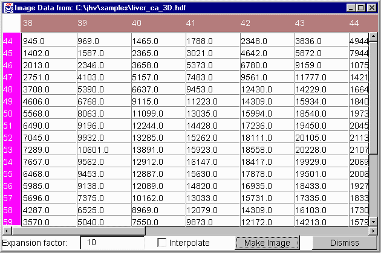
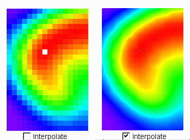
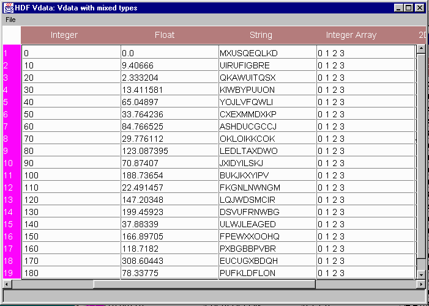
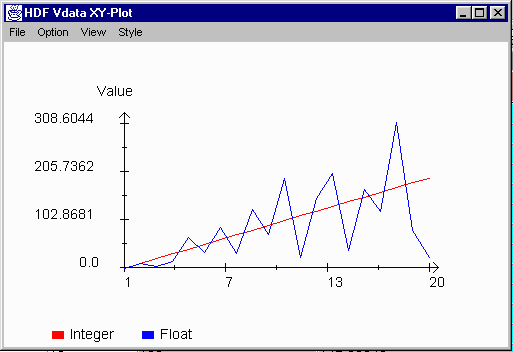

[Index]
[Prev]
[Next]
[Bottom]
Chapter 9: Spreadsheets and Plots
A JHV spreadsheet is designed to display the raw data of an image or a
Vdata table. The spreadsheet displays data that can be defined in terms of
three variables: two independent variables which correspond to the row
and column labels, and a dependent variable, which has a value at every
point. JHV supports two types of spreadsheet: image spreadsheets and
Vdata spreadsheets. An image spreadsheet is created from an image which
represents an HDF raster image or an SDS data array. A Vdata spreadsheet
is a table which displays a Vdata.
- 9.1 Image Spreadsheets
- 9.2 Vdata Spreadsheets
- 9.3 Vdata X-Y Plots
9.1 Image Spreadsheets
JHV has the ability to generate a spreadsheet from an image. Select a
subset area from the image in the image window and click the spreadsheet
button to create a spreadsheet containing the data of the selected
image area.

Figure 9.1 An image spreadsheet
The current image spreadsheet supports a Make Image action.
Make Image creates an image from the spreadsheet. There are two
parameters associated with creating an image from a spreadsheet:
an expansion factor and interpolation.
- Expansion factor
- The expansion factor determines the magnification of the image created
from the spreadsheet. The factor values are integers such as 1, 2, 3,
and so on. An image with expansion factor 1 is the same size as the
original selected image area. An image with expansion factor 2 will be
double the original image size, and so forth. Larger expansion factors
will produce lower resolution images with a jagged appearance.
- Interpolation
- The interpolation option attempts to choose color values that better
preserve the quality and detail in the original image. Interpolation is
very useful when you create an image with a larger expansion factor.
A large expansion factor with no imterpolation will yield a jagged
appearance because the resolution does not increase with the magnification
of the image. Interpolation produces an image with the resolution of
the original image even for larger expansion factors. In the following
figure, two images have been created from the same spreadsheet with
expansion factor 10. The left image, with a jagged appearance, was
created without interpolation. The image on the right, with a smoother
appearance, was created with interpolation.

Figure 9.2 Image interpolation
9.2 Vdata Spreadsheets
A Vdata object is a table in which each row has the same structure and
each column contains data of the same data type. A column can be any of
data type, such as character, integer, floating point, or an array of
these types. Therefore, a cell in a Vdata table can be an array.
Elements may be cut off in display if a cell is an array.
To open a Vdata spreadsheet, click on a Vdata object icon in the
HDF hierarchical tree in the main window. The spreadsheet will appear
in a spreadsheet window.
The spreadsheet window File menu offers three commands:
- Save AS HDF
- Saves the current Vdata into a new HDF file.
- Save AS Text
- Saves the Vdata into a new ASCII file.
- Close
- Closes the spreadsheet window.

Figure 9.3 A Vdata spreadsheet
9.3 Vdata X-Y Plots
Clicking on a column with numeric data in a Vdata spreadsheet opens a
plot window with the column values plotted against the row index numbers.
Clicking on another column adds that column to the plot. The Vdata
spreadsheet cannot create plots for columns containing arrays or
character data.
The following is an example of Vdata plot with two columns (Integer
and Float) plotted against the row index.

Figure 9.4 A Vdata X-Y plot
The Vdata plot window offers three menus:
- Option menu
-
The Option menu contains two commands:
Line-Plot and XY-Plot. A line-plot is a
2D plot in which columns (vertical axis) are plotted against
the row index (horizontal axis). An X-Y plot is a plot in
which columns are plotted against the first selected column.
- View menu
-
The View menu provides zooming in and zooming out functions.
Zoom In decreases the range of visible rows in the plot;
Zoom Out increases the visible range.
- Style menu
-
The Line style provides a line plot. With the Scatter
style, column values are scattered on the plot.
[Index]
[Prev]
[Next]
[Bottom]

The National Center for Supercomputing Applications
University of Illinois at Urbana-Champaign
hdfhelp@ncsa.uiuc.edu